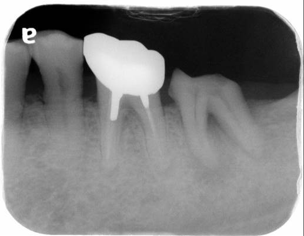
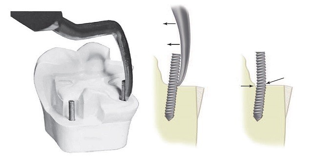
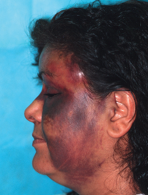
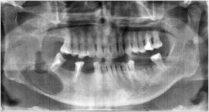
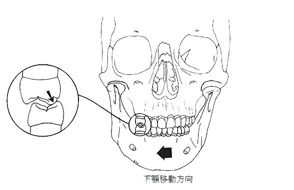
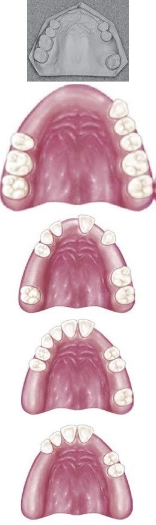
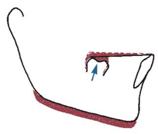
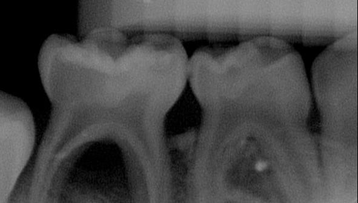

白底 · 藍灰色系 · 有收合功能 · 乾淨不刺眼
| Type | 構型 | 最常見牙位 |
|---|---|---|
| Type I (1-1) | 單管直達根尖 | 上顎前牙、下顎小臼齒 |
| Type II (2-1) | 兩管匯合成單管 | 下顎前牙 |
| Type IV (2-2) | 兩管各自出根尖 | 上顎第一小臼齒 ★ |
| 項目 | 內容 |
|---|---|
| 最常見牙位 | 下顎第二大臼齒（亞洲人 44.5%） |
| 臨床風險 | 舌側管壁極薄，易發生 Stripping perforation |
| 亞洲特色 | 亞洲人發生率遠高於歐美 |


| 方法 | 說明 | 優缺點 |
|---|---|---|
| 電子根尖定位器 (EAL) | 第三代雙頻率，測阻抗差異 | 不受 NaOCl 電解質干擾 |
| X 光法 | 根尖孔在影像尖端退回 0.5–1mm | 無法精確判讀 |
✦ 點標題可收合展開 · 白底藍灰 · 最清爽
白底 · 青綠色系 · 清新不刺激 · 有收合功能
| 特徵 | 可能診斷 |
|---|---|
| 邊緣清楚、皮質骨完整 | 良性囊腫（如 Dentigerous cyst） |
| 邊緣不規則、蟲蝕狀 | 惡性腫瘤（需切片確診） |
| 瀰漫性透射、邊緣模糊 | 急性炎症 |


| 項目 | 內容 |
|---|---|
| 最常見牙位 | 下顎第三大臼齒 |
| X 光特徵 | 濾泡圍繞未萌出齒冠，邊緣清楚 |
| 病理 | 牙胚濾泡液體積聚 |
| 類型 | 說明 |
|---|---|
| 絕對禁忌 | 未控制的血液病、急性感染期、放射治療後骨壞死區 |
| 相對禁忌 | 糖尿病未控制、抗凝血藥物、妊娠初三個月 |
✦ 青綠系清新感 · 最不傷眼 · 適合長時間閱讀
米灰色系 · 低飽和度 · 最沉穩 · 適合長時間備考
| 原則 | 說明 |
|---|---|
| Ante's Law | 支柱齒牙周韌帶面積 ≥ 缺牙牙周韌帶面積 |
| 支柱齒數量 | 缺牙數 ≤ 支柱齒數（一般原則） |
| 連接器設計 | Rigid connector 為主，彈性連接用於特殊情況 |


| 名詞 | 定義 |
|---|---|
| OVD（咬合垂直距離） | 牙齒咬合時上下頷間距離 |
| RVD（息止垂直距離） | 肌肉放鬆時上下頷間距離 |
| Freeway Space | RVD − OVD ≈ 2–4mm |
✦ 米灰低飽和度 · 最沉穩耐看 · 不疲勞
藍紫色系 · 淺藍底 · 深藍強調 · 顏色最分明
| 分類 | 特徵 | 臨床表現 |
|---|---|---|
| Class I | 上顎第一大臼齒近心頰尖咬在下顎頰側溝 | 正常咬合關係 |
| Class II Div 1 | 下顎後縮，上前牙唇傾 | 上暴牙 |
| Class II Div 2 | 下顎後縮，上前牙舌傾 | 深咬 |
| Class III | 下顎前突 | 反咬合（地包天） |


| 術式 | 適應症 | 充填材料 |
|---|---|---|
| Pulpotomy | 僅冠部牙髓受累，根部牙髓健康 | Formocresol / MTA |
| Pulpectomy | 牙髓全部壞死或根尖病灶 | ZOE（可吸收） |
| 字母 | 代表 | 計算方式 |
|---|---|---|
| D | Decayed（齲壞） | 有齲洞的牙齒數 |
| M | Missing（缺失） | 因齲拔除的牙齒數 |
| F | Filled（充填） | 已充填治療的牙齒數 |
✦ 藍紫色系 · 顏色最分明 · 視覺層次清楚